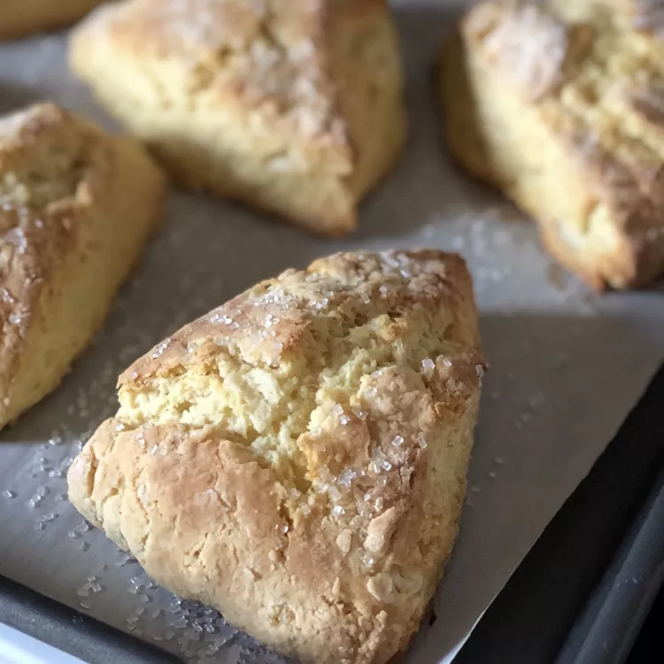

Scones

Description
These scones make for a delicious breakfast and can be whipped
up in a snap. Add currants, raisins, toasted nuts, or simply
make them plain - they're excellent no matter what. I like to
add toasted sliced almonds and top them with raspberry jam.
This recipe calls for buttermilk, which give the scones a rich,
soft yet crumbly texture. I always use full-fat buttermilk when
I make them. It can be a little more difficult to find, but worth
it in my opinion.
Ingredients
- 3 cups flour
- 1/3 cup sugar
- 1 teaspoon salt
- 2 1/2 teaspoons baking powder
- 1/2 teaspoon baking soda
- 3/4 cup (1 1/2 sticks) unsalted butter
- 1 cup buttermilk
- 1 tablespoon heavy cream (for brushing)
- any mix-ins you would like to add!
Steps
- Preheat oven to 400 degrees F.
- Prepare a baking sheet with either cooking spray or
parchment paper.
- Combine flour, sugar, salt, baking powder, and baking soda
in a large bowl.
- Add butter and mix with fingertips to a coarse meal.
- Add buttermilk and mix until just combined.
- Add mix-ins if desired.
- Transfer dough to a floured board or countertop and
divide into two parts.
- Roll each part to 3/4 inch thick rounds. Cut each round
into eight wedges.
- Place wedges slightly separated onto your prepared baking sheet
- Brush the tops with heavy cream.
- Bake for 15 mins, or until lightly browned.
- Serve warm. (These are great heated up in the toaster oven!)